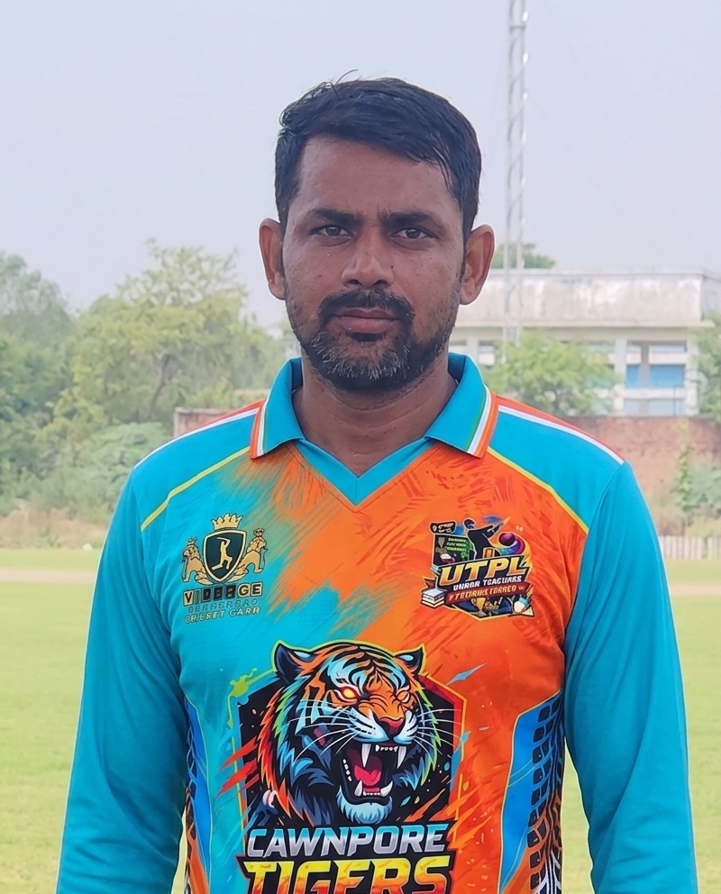

Together We Roar, Together We Win

Role : Explosive Opener
Jersey No : 7
Batting : Right Hand Batsman
Bowling : Do Not Bowl
Jishan is the explosive opening batsman of CAWNPORE TIGERS XI. He attacks the bowling from the very first ball and provides aggressive starts to the team. His fearless batting makes him one of the most dangerous top-order players.
⬅ Back to HomeJersey
Role
Batting
Bowling